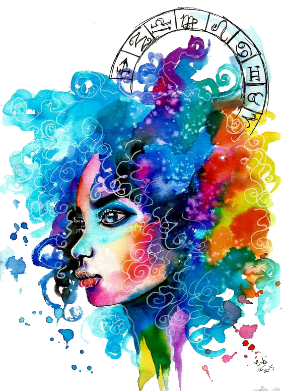

Romance-a-holics by nature, Leo loves being in love—and your proud, flamboyant sign wants the whole world to know when you are. Plain and simple, Leos love drama — in fact, your sign rules it. Unless there ‘s romance and fireworks that light up the sky, you want no part of the relationship. Red roses, poetry, expensive gifts…you’ll take it all. Spoiling and being spoiled are the name of the game.
The lion is the symbol for this sign because the lion embodies the best characteristics of the leo; proud, regal, relaxed, and in charge. Leo people know they are in charge, even when it may seem outwardly that they are not. Leo signs tend to like relaxation, preferably someplace warm and comfortable. Leo likes the big picture, not the small details and fine print. Things that are too complicated, involved, or boring, they have no patience for. They are natural leaders and don’t often do well in situations where they have to take orders from others.
Leo tend to be honest and decent people, opting to do the right thing regardless of the situation. They love organization so that they can find their ‘things’. Leos love material goods and luxury and want those that they love to experience this wealth as well. Leo are generally accepting of everyone initially and make decent, lasting relationships.